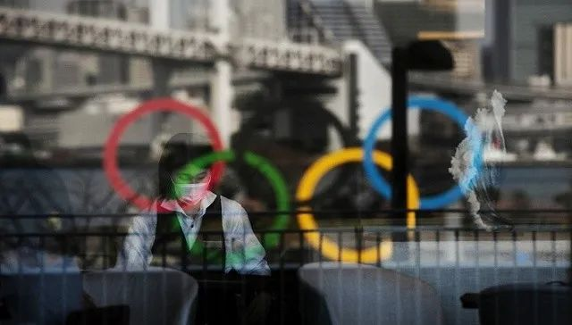
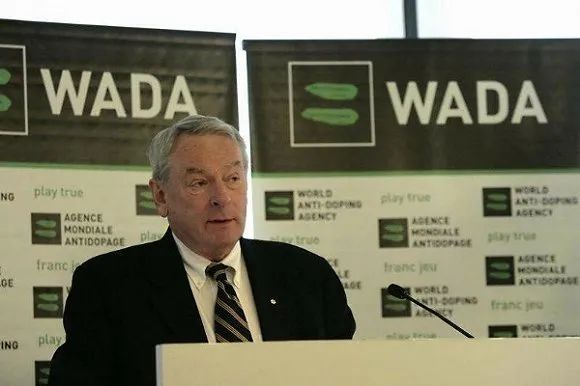
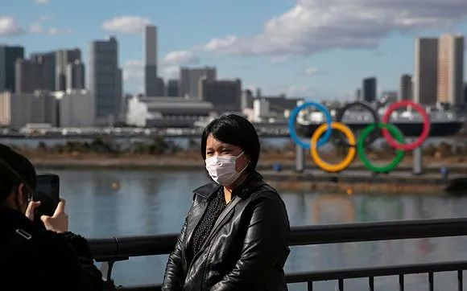

日本疫情蔓延，东京奥运会还能如期开吗？
原文链接 备份链接 按照原计划，今年奥运圣火传递活动将在3月12日从希腊开始，3月26日来到日本，7月24日东京奥运会将开幕，这些安排会否受到影响，取决于日本政府对于疫情的控制 2020年2月15日，东京奥运会圣火传递大使石原里美（右）在 …
图片来源：视觉中国
记者：罗盈盈
“
如果日本当地疫情在今年5月底无法得到有效控制，这届奥运会有可能会被取消。
”
即使日本新冠肺炎疫情持续蔓延，当地官员、东京奥组委以及国际奥委会早前多次强调，东京奥运会准时举办。
但在2月25日，国际奥委会高级官员迪克·庞德（Dick Pound）在接受美联社采访时，披露了新的说法——2020年东京奥运会存在被取消的可能性。
迪克·庞德表示，目前还有三个月的窗口期来决定东京奥运会的命运，如果日本当地疫情在今年5月底无法得到有效控制，鉴于公共卫生事件的危险性，这届奥运会有可能会被取消。
与此同时，他声称，延期或易地举行奥运会等备选方案的可行性不大，这不是一件容易的事情。
迪克·庞德是一位来自加拿大的前游泳选手，1987年成为国际奥委会委员，是至今任期最长的委员。他曾历任国际奥委会市场委员会主席、电视转播权谈判委员会主席、国际奥委会执行副主席、世界反兴奋剂机构主席。
当前，国际奥委会仍未就东京奥运会前景进行明确表态，迪克·庞德的个人说法并不代表官方的正式意见。但这被视为国际奥委会催促日本当局全力抗击疫情的信号。
日本奥运担当大臣桥本圣子2月26日表示，“（我们）已就此询问国际奥委会，国际奥委会回复称，‘这不是国际奥委会的官方主张，有这样的言论正说明了国际奥委会正在朝着东京奥运会按照计划举办的目标，开展准备工作。’”
迪克·庞德（Dick Pound）
按照原计划，东京奥运会和残奥会，将分别于2020年7月24日至8月9日和2020年8月25日至9月6日举行。
目前距离奥运会揭幕，还有5个月的时间。包括世界卫生组织和医学界专家人士普遍认为，现在考虑是否取消东京奥运会还为时过早。
迪克·庞德估计，三个月的窗口期过后，今年5月下旬，视乎日本国内疫情是否得到控制，再决定东京奥运会的命运，是一个比较恰当的时间表。若防控效果不好，到时候距离奥运会仅剩两个月，或许只能取消。
据日本厚生劳动省和各地方政府的消息，截至当地时间2月25日20点，日本国内累计确诊新冠肺炎病例861例，死亡3例。其中，停靠在横滨的钻石公主号邮轮确诊691例。
在日本47个一级行政区中，多达17个发现新冠肺炎病例，日本政府已紧急拨款103亿日元用于应对新冠肺炎疫情。
受疫情影响，不少东京奥运会相关活动已被叫停，包括志愿者培训和东道主小镇峰会等。此外，部分奥运场馆测试赛将不设观众。日本J联赛则决定，3月15日之前全部94场比赛将延期举行。
奥运会作为规模庞大的体育盛会，迪克·庞德认为，“很多事情必须现在开始做，加强自己的安保，包括食物、奥运村和酒店，以及各国媒体将在那里建造他们的演播室。”
至于东京奥运会是否被取消，做主的不仅仅是国际奥委会一家机构，需要与世界卫生组织、联合国进行磋商，同时还要考虑其他体育组织、相关机构甚至电视转播商的利益。
尽管形势难以预料，迪克·庞德认为，以目前的迹象来看，奥运会筹备工作照常进行，运动员应该按照原定计划进行训练。
近日，鉴于韩国疫情的严峻局势，国际乒联已经决定延期举办原定于3月底举行的釜山世乒赛，暂定延迟至6月21日至28日举行。
与此同时，外界有声音称，延期或易地办赛同样是东京奥运会可供考虑的选择。但在业内人士看来，这将难以实现。
“就奥运会的规模而言，你不能推迟，那么大规模的赛事移动，同时每个国家有不同的联赛安排，各类项目有自己的竞赛日程，还有电视转播难以协调，”迪克·庞德，奥运延期并非一个简单的时间问题。
尤其在每年秋季，职业体育赛事的日程表都被安排得满满当当，包括NBA、NFL等北美职业联赛、欧洲足球及篮球赛事等扎堆举办。在这样的情况下，运动员和各个国家队将难以协调奥运会和联赛赛程。
除此之外，推迟举办奥运会不太可能让广播公司满意。
自1988年以来，NBC一直持有夏季奥运会的美国转播权，并且已经支付东京奥运转播费用。据悉，考虑到下半年有众多职业赛事转播计划，他们无法接受奥运延期的安排。
2月20日，英国保守党伦敦市长候选人贝利（Shaun Bailey）曾公开表示，如果新冠肺炎疫情迫使东京奥运会易地举行，伦敦将做好举办的准备。
外界认为，他的言论是为5月伦敦市长选举造势，以达到政治目的。据路透社报道，一名英国体育官员称，伦敦没有接手的计划，“这是一位市长候选人的表态，而非英国或伦敦的态度。”
迪克·庞德则表示，将奥运会整体搬到另一个城市也不太可能，“因为世界上很少有地方能在这么短的时间内完成设施建设。”
与此同时，他不赞成将奥运赛事分散到世界各地举行，因为那样无法完整构成“一届奥运会”，更像是各个单项的世锦赛。
为了筹备东京奥运会，日本方面已经花费约250亿美元。如果推迟一年举办赛事，东京奥组委未必能承受更大的成本消耗。
“日本必须问问自己，这样的成本泡沫能否再维持多一年，”迪克·庞德说道。
东京设立奥运五环标志
当前，国际奥委会已经建立一项应急基金，大约有10亿美元的储备，以应对突发情况。万一东京奥运会被叫停，这笔资金将帮助国际奥委会和各大体育协会度过难关，维持机构正常运作。
根据国际奥委会2018年度财务报告，2013-2016年周期获得57亿美元的收入，其中，73%来自转播版权收入。
奥运会的历史上，没有因为公共卫生事件而取消的先例，此前只是在一战和二战期间被取消过三届比赛，东京曾受影响——1940年东京奥运会因二战被取消，直至1964年，东京才首次举办奥运会。
即使3月份是全球抗击疫情的关键期，东京奥组委坚持奥运圣火传递活动照常进行。
根据计划，3月12日，圣火采集仪式将在奥运会发源地希腊古奥林匹亚举行，火炬将在希腊境内由600名火炬手传递3200公里，于3月19日抵达雅典帕纳辛奈科体育场，并转交给东京奥组委的代表。
日本境内的奥运火炬传递由3月26日开始，从日本福岛县第一核电站中转场所“J-village”出发，历时121天巡回日本47个都道府县。
东京新国立竞技场的火炬台，能否如期在7月24日开幕式上被点燃，各大相关组织或将在三个月后给出结论。

原文链接 备份链接 按照原计划，今年奥运圣火传递活动将在3月12日从希腊开始，3月26日来到日本，7月24日东京奥运会将开幕，这些安排会否受到影响，取决于日本政府对于疫情的控制 2020年2月15日，东京奥运会圣火传递大使石原里美（右）在 …
原文链接 备份链接 图片来源：视觉中国 记者：罗盈盈 “ 这场体育盛会能否如期揭幕依然存在变数。 ” 新冠肺炎疫情在日本有愈演愈烈的趋势，原定今年7月揭幕的东京奥运会面临挑战。 2月21日，日本内阁官房长官菅义伟在记者会上强调，东京奥运会 …
原文链接 备份链接 澎湃新闻记者 刘栋 过去的这个周末，日本的新冠肺炎疫情开始出现一系列变化。 2月16日，日本首相安倍晋三紧急召开专家组会议。厚生劳动大臣加藤胜信在会后的记者会上表示，目前日本的新冠疫情“已经进入到一个新的阶段”。 “我 …
原文链接 备份链接 日本国内新冠病毒感染者近日连续增多，一些地方相继报告了无法确定感染途径的病例。日本厚生劳动省昨天（17日）表示，停靠在日本横滨港的“钻石公主”号邮轮又新增了99名新冠肺炎病例，累计已达454例。鉴于形势日益严峻，日本 …
原文链接 备份链接 2月10日，日本东京，2020东京奥运会前瞻，奥运宣传标语亮相东京街头。图片来源：视觉中国 记者：高恺仪 “ 首例病逝确诊患者是一位80多岁的女性。鉴于在中国的经验，新冠肺炎病毒对有基础病的老年人造成的影响更大，老龄化 …